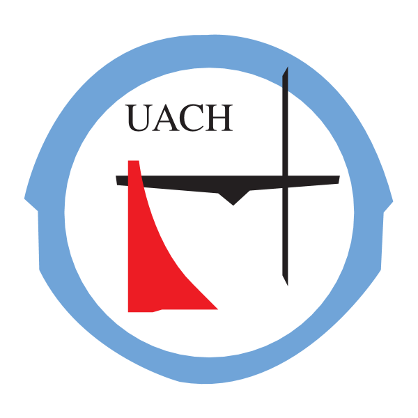

Sugerencia: Si quiere volver al inicio presione el pequeño cuadrado morado
La Ingeniería en Computación es un programa académico avanzado que capacita a profesionales para aplicar las ciencias computacionales a las demandas de los sectores industrial, comercial y de servicios. Utiliza teorías, modelos y técnicas para identificar, analizar, diseñar y desarrollar soluciones computacionales basadas en tecnologías de vanguardia.
Este programa fomenta la creatividad y la innovación en el desarrollo de procesos, adaptándose a los cambios en el campo y atendiendo las necesidades del entorno social y económico. Se ajusta a las tendencias actuales y futuras, incorporando nuevas competencias y habilidades relacionadas con las innovaciones tecnológicas, y responde a las demandas del mercado global y la globalización en el ámbito tecnológico.
|
 |
↓

El programa de Ingeniero en Computación va dirigido a estudiantes con base en ciencias, un fuerte interés en tecnología y sistemas computacionales, habilidades lógicas y analíticas, una inclinación por la resolución de problemas. Deben mostrar curiosidad y entusiasmo por el aprendizaje continuo, capacidad para el trabajo en equipo, y una disposición hacia el pensamiento crítico y la innovación tecnológica.
El egresado del programa de Ingeniería en Computación poseerá una sólida formación en fundamentos computacionales y tecnológicos, con especializaciones en dos ramas. En la opción Hardware, tendrán competencias en Análisis de datos, Ciberseguridad, Redes, Sistemas Embebidos, Automatización y control, preparándose para abordar desafíos en sistemas integrados y seguridad de la información en infraestructuras tecnológicas. Por otro lado, la opción Software los capacitará en Análisis de Datos, Ciberseguridad y Desarrollo de Software, brindándoles las habilidades para diseñar, implementar y gestionar soluciones de software innovadoras y seguras, adaptándose a las necesidades del mercado tecnológico actual.
Desarrollo de Software: Creación y mantenimiento de aplicaciones y sistemas de software en diversas industrias (sectores económicos). Ciberseguridad: Protección de sistemas informáticos contra intrusiones, ataques cibernéticos y vulnerabilidades. Análisis de Datos: Trabajo con big data para análisis, interpretación y toma de decisiones basada en datos. Gestión de Redes y Sistemas: Diseño, implementación y mantenimiento de redes y sistemas informáticos. Sistemas Embebidos: Desarrollo y programación de sistemas integrados en dispositivos electrónicos. Automatización y Control: Implementación de soluciones de automatización en sectores industriales y comerciales. Investigación y Desarrollo (I+D): Innovación en tecnología y desarrollo de nuevos productos y soluciones tecnológicas. Consultoría Tecnológica: Asesoramiento a empresas en la implementación de tecnologías y sistemas informáticos. Educación y Capacitación: Docencia y formación en instituciones educativas y empresas. Emprendimiento: Creación de startups tecnológicas o desarrollo de productos y servicios independientes.
| Unidad | Facultad de Ingeniería | Programa | Licenciatura en Ingeniería de Software |
|---|---|---|---|
| Área | Sin área/opción | Plan | ISV16 |
| Campus | Chihuahua | Modalidad | Virtual |
| Estatus | Reingreso inscrito | ||